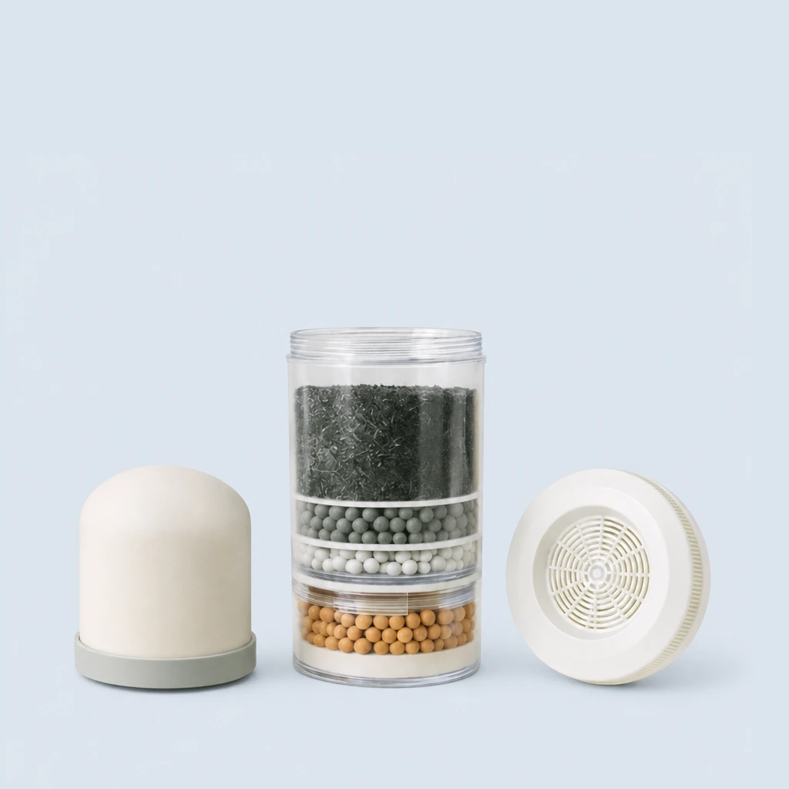

Alivio · Por dentro
Tres etapas de filtrado

1
Filtro cerámico
2
Filtro multimedia de 5 capas
Carbón activado y de plata · WMSM-300 · arena de sílice · zeolita · arena mineral
3
Piedra mineral
Esquema ilustrativo. Los resultados dependen de la calidad del agua de entrada.